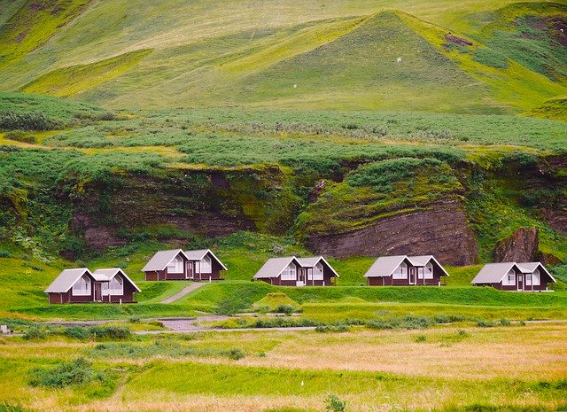
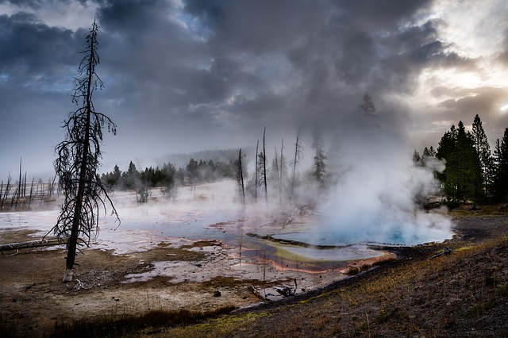

a태그로 링크 걸기
< href="보여줄 내용의 경로(주소값)" >
네이버
이미지 수업보기
속성으로 링크를 여는 방식 (새탭에 열기)
- target="_self" 기본값. 현재위치에 링크가 열림.
- 새 탭에 링크가 열림.
- target="_top" 프레임을 나뉘지 않고 전체 링크가 열림.
- target="_parent" 한단계 상위창에 링크가 열림.
상대 경로로 웹문서 보여주기(*.html/*.htm) 보여주기
폼수업 보기 1
폼수업 보기 2
원래탭
새탭 다음
다이소
2-3 상대경로로 이미지 (*.jpg/ *.gif/ *.png) 보여주기
연안 그림
마을 사진
확인
2-4 상대경로로 동영상 (*.mp4/ *.ogg/ *.web) 보여주기
동영상
폼테스트용 내용
2-4 압축파일로 링크 걸기
이미지 압축파일
브라우저가 처리 불가한 파일을 링크걸면 다운로드됨
예) 압축파일, 한글파일, pdf 등...
mailto : email 링크 걸기 ,이미지 이메일 링크 걸기
busan email
class@itwillsbs.co.kr
이미지 이메일 링크 걸기

이미지에 링크 걸기

사막링크로 이동
이미지에 이미지 맵으로 다중링크 걸기
이미지 하나에 부분적으로 각 부분 별로 따로 여러 링크를 걸 수 있다.

이미지맵 생성기
1.https://www.image-map.net/

top
이미지맵